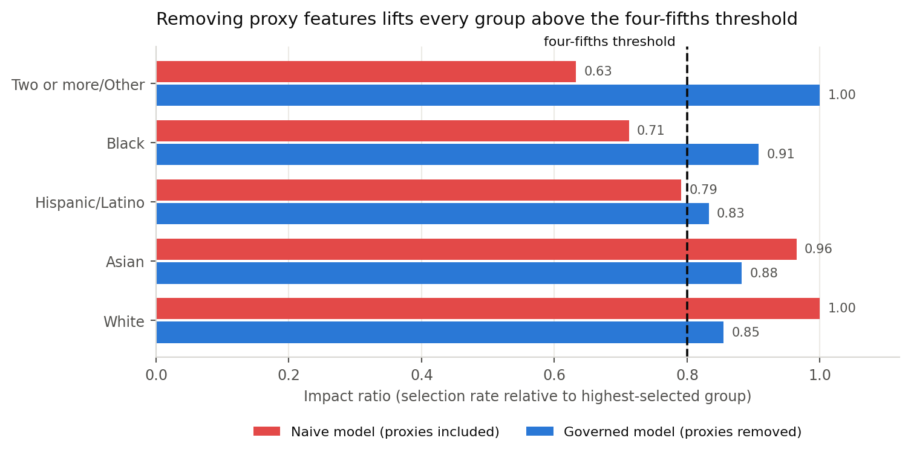
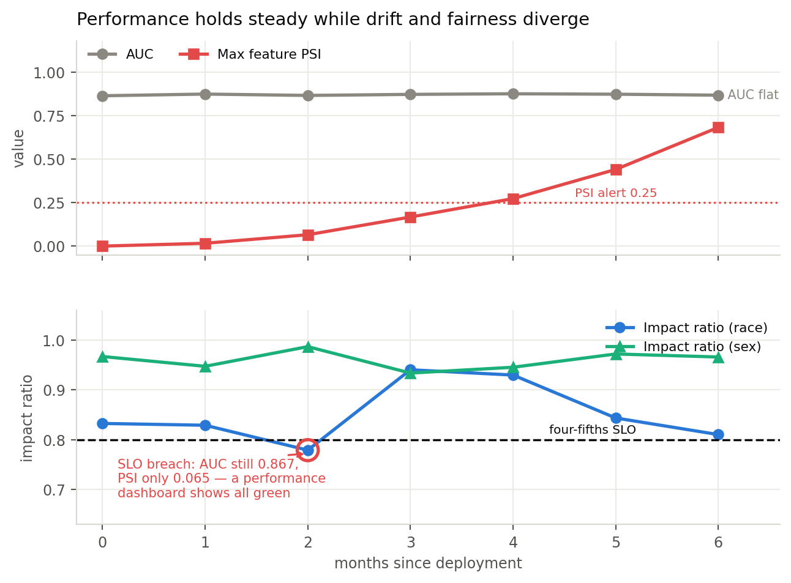
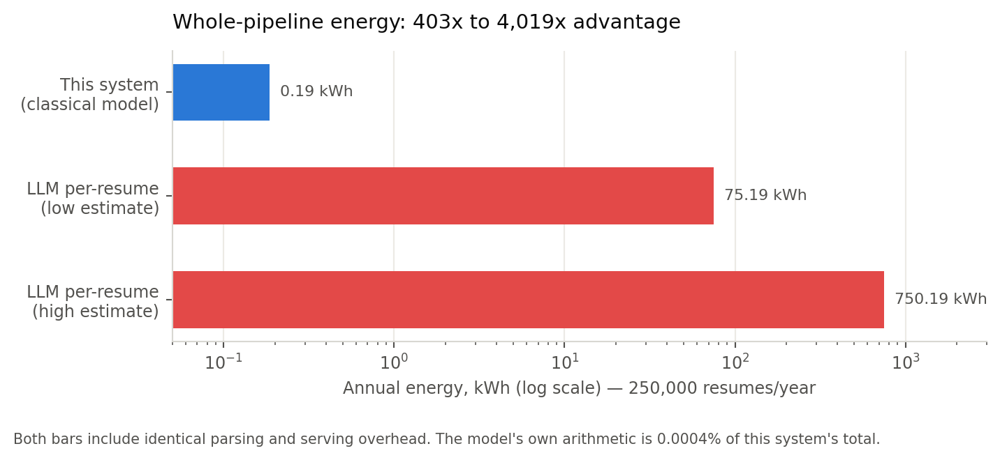

Design, evaluation, and deployment controls for an AI system in recruitment
A large software company receives about 250,000 applications a year for software engineering. Due to the extremely large demand, they can only afford to have humans review a quarter of them. The task becomes to rank the top applicants automatically, so the recruiter sees all the best fits for the job.
This is a domain in which AI has very publicly come up short. Amazon cut an internal recruitment model in 2018 when it found that the model deducted from an application with the word "women's". The model was trained on human decisions and had baked in human bias. This is clearly a problem as is, but it scales into a much larger problem as the ratio of the model's decisions to the model's training data gets larger and larger. This project is made to rebuild that failure by measuring the bias and then constraining it, so that governance can be evaluated against real evidence.
The training uses a synthetic dataset of about 12,000 applicants rather than a real collection of resumes. This was a deliberate choice for two main reasons. First, real resumes contain data and information that can't, and shouldn't, be used for model training without consent. Moreover, a real dataset can never reveal true qualification, just if a candidate was hired. This is how bias gets baked into the formula early on. In a constructed dataset, qualification is known information and generated separate from the protected class. There is no true ability difference between groups in this world, so anything the audit finds is bias I put there on purpose and can measure.
The training label has never been "was this person good at the job", but instead did this person get advanced by the recruiter. This brings in many biases which are not legal or productive for recruiting. Some of those include referrals, gaps, prestige, and distance. Referrals are internal references which are among the most obvious biases which clearly skew data against the best candidate. These are historically significant sources of unfairness and disparity which shouldn't need to be as prominent as they are now. Gaps are periods of time in which a candidate is not employed, often creating bias against candidates who had to step away from work for personal reasons. Prestige refers to the school which a candidate attended, which clearly has major socioeconomic and class factors. Distance is the kilometers from the work site that the candidate lives.
Two models were trained so that they could be easily compared to one another. The naïve model uses all sixteen available features, including the four previously mentioned biased factors. The governed model uses only the 12 merit-based features. Both were fit as a logistic regression and gradient boosting model and evaluated on a 2,400-applicant test set.
| Model | AUC vs recruiter | AUC vs merit | Precision | Brier | Precision @ 25% | Recall @ 25% |
|---|---|---|---|---|---|---|
| Naïve Logistic | 0.911 | 0.915 | 0.775 | 0.098 | 0.578 | 0.879 |
| Naïve GBM | 0.908 | 0.921 | 0.765 | 0.101 | 0.697 | 0.716 |
| Governed Logistic | 0.865 | 0.961 | 0.680 | 0.122 | 0.556 | 0.742 |
| Governed GBM | 0.859 | 0.952 | 0.663 | 0.125 | 0.612 | 0.653 |
The naïve model performed better at predicting what recruiters did, but worse at identifying who was actually qualified. In practice only the first column is observable. So standard practice would be to select the model which has the highest value. So, while following every best practice the company would select the discriminatory model. This shows that accuracy on a biased label is not a measure of true quality.
The candidate that should be chosen is the governed logistic regression. It measures candidates most accurately against merit without getting lost to the noise of bias. It also happens to be the smallest and simplest model I trained, at 2.1 KB, which was not what I expected going in.
Fairness was measured as common practice in law, specifically NYC, which states: selection rates and impact ratios by sex, race/ethnicity, and their intersection. An impact ratio below 0.80 is prima facie evidence of adverse impact under the EEOC Uniform Guidelines.
| System | Sex | Ethnicity | Intersection | Most affected group |
|---|---|---|---|---|
| Human recruiter | 0.607 | 0.583 | — | — |
| Naïve model | 0.612 | 0.633 | 0.488 | Female / Black |
| Governed model | 0.967 | 0.833 | 0.652 | Female / Hispanic |
The naïve model inherited human bias and then concentrated it, especially at the intersection. Automation also applied bias much more consistently and predictably than humans, which is what automation is made to do. The governed model served much better for sex and ethnicity alone, but still underperformed at the intersection.

While the governed model certainly performed better on the fairness scale, the intersection remains an unfixed problem. I tried my best to fix it through a few different efforts, but nothing that didn't seem either like covering an issue or overfitting to fix an issue. It would have been dishonest to report anything else regarding the issue of intersection grading.
Explainability has two distinct jobs that are often confused against each other. Global explainability is how the model makes decisions as a whole. Local explainability is the ability to track why a specific decision was made. Both of these are extremely important for my project. Global tracks how fair decisions are being made on average. Local is an important artifact for specific explanation.
SHAP is a way of measuring why the model did what it did by assigning a percentage value to each feature. SHAP found that 37.7% of total attribution flowed through our bias metrics for the naïve model, including employee referral which was the second most important feature behind keyword match at 15.5%. A model which takes referral as more important than skills, education, and demonstrated work fails to identify what makes a candidate's merit.

The charts for both models clearly illustrate the difference in fairness and justification. The naïve model takes all four biased metrics as some of the most important, putting many of them above education, projects, and skill. The governed model much more fairly distributes job match, then skill match, then education, projects, etc. Keyword match goes from 18.8% of the decision to 33.3% once the biased features are gone. This visualizes the difference between the two models very well.
The most important design choice made with my model was not allowing it to reject candidates. It outputs a shortlist and recommendations, but it was specifically made not to have any code allowing it to reject. This keeps the tool as a ranking tool and not an automated decision maker. This way, the people who have expertise in the area can choose which and how many candidates they want to review.
| Layer | Control | Measured behavior |
|---|---|---|
| Input validation | Range and null checks on all features. | Odd records default to manual review. |
| Adversarial detection | Prompt injection, hidden text, keyword stuffing, etc. | 7 of 7 red-team cases pass. |
| Proxy monitoring | Continuous test for features becoming predictive by group. | 11 of 48 feature-attribute pairs flagged. |
| Abstention band | Model declines to rank scores 0.25–0.55. | 22.8% of applicants route to human review. |
| Output constraints | No auto reject. | Naïve model output held, governed model released. |
| Scope limits | Restricted to software engineering applications. | Out of scope use blocked. |
Prompt injection is a great threat to systems like this one. Many applicants will try many different tricks to get scored highly by the automated model, which goes against the point of having one in the first place. Because of this, I set up red teams, which is a test suite which can detect things like prompt injection, hidden text, and keyword stuffing.
Worth noting an experience I had while building this in which the tests were directly deducing candidates who worked in ML/AI safety due to the phrases in their resume surrounding prompt injection etc. This forced me to rethink the way that the model worked. Now the system detects framing rather than just subject matter. I kept that case in the test suite so it can't come back.
Resume screening drifts in three main ways. Three failure modes each require their own detector so that we know when to fix them. The first way is feature drift, which is when the applicant pool changes. Next is label drift, which is when what recruiters reward changes. Final is fairness drift, which is when the model fits itself onto prejudice and bias decision making.

The simulation demonstrates the distinction between accuracy and fairness. In month 2 the race impact ratio dips below 80% to 0.779, which is a major red flag event. Still, the accuracy measures both remain in healthy places, with AUC at 0.867 and maximum feature PSI at 0.065, much below the warning band. By month 6 it runs the other way, with PSI at 0.683 and AUC unmoved at 0.868. This showcases why we need different tests for different modes of drift.
| Trigger | Severity | Response |
|---|---|---|
| PSI ≥ 0.10 on any feature | P3 | Data science review |
| PSI ≥ 0.25 on any feature | P2 | Retraining assessment |
| AUC drops > 0.05 from baseline | P2 | Model owner review |
| Impact ratio < 0.80 | P1 | Shortlist auto widened |
| Impact ratio < 0.70 | P0 | Model disabled until fixed |
| Adversarial flag rate > 3x baseline | P2 | Security review |
An automated employment decision tool should be a very regulated applied AI feature and the obligations I made are concrete. These decisions were made based on existing laws surrounding this topic.
| Policy | Obligation | System response |
|---|---|---|
| NYC Local Law 144 | Annual independent bias audit. | Audit pipeline is executable and versioned. |
| EEOC Uniform Guidelines | Four-fifths rule; validation evidence for any selection procedure. | Impact ratios tracked continuously. |
| Title VII | No disparate treatment or unjustified disparate impact. | Protected attributes excluded from features. |
| Illinois AIVIA | Notice, explanation, and consent for AI analysis. | Candidate explanations generated per applicant. |
| Colorado SB 24-205 | Duty of reasonable care against algorithmic discrimination. | Impact assessed in this document. |
Every scoring event writes a record of important data including the model version, feature vector, score, routing action, guardrail flags raised, etc. Records are retained for long enough to be used in any legal dispute. The bias argument is all code, not a document, which executes against any scored group and produced the tables and metrics in this report.
Applicants are told before the submission that an automated tool assists in screening. They are also told which qualifications it assesses and that no rejection is automated. This allows the candidates to understand the nature of the process before being left curious as to how they weren't selected for their aspired posting.
The system measured training time, model size, latency, and estimated energy consumption. Energy consumption came from the measured CPU time. These estimates speak to the sustainability of the project.
| Model | Train CPU (s) | Size (KB) | Inference (ms / 1k) | Train energy (Wh) |
|---|---|---|---|---|
| Governed logistic | 0.02 | 2.1 | 0.6 | 0.0001 |
| Governed GBM | 0.37 | 201.9 | 2.71 | 0.0017 |
| Naïve GBM | 0.39 | 240.9 | 3.40 | 0.0018 |

The project is clearly environmentally sustainable over time, especially when compared to its automated counterparts. The whole pipeline runs at 0.19 kWh a year, which is somewhere between 403 and 4,019 times less than sending every resume to a language model. This is mostly intuitive as the governed model simply has less features to navigate and a logistic model requires less calculation (generally) than a GBM.
One thing I want to be honest about is that the model itself is a rounding error here. The scoring math is 0.0004% of the pipeline's energy. Parsing the resumes is what actually costs something. If I had only counted the model I could have claimed a much bigger number, but it would not have been a real one.
Overall, I found that my governed model significantly outperformed the naïve model. It was more fair toward all people and more accurate to the metrics that truly counted. It did not fix the problem completely and namely was still biased against female Hispanics, and other intersections, which was a great disappointment for me. I have no doubt that with a small team this project could reach the point in which it could be fully deployed.
For now the honest answer is that this system belongs in front of a recruiter, not in place of one. It ranks and it routes, and a person still decides.
src/) and notebook, seeded at 42. Metrics are written to
reports/*.json and regenerate end to end via src/generate_data.py →
train.py → fairness.py. A test in tests/verify_report.py
checks the claims in this document against that computed output.